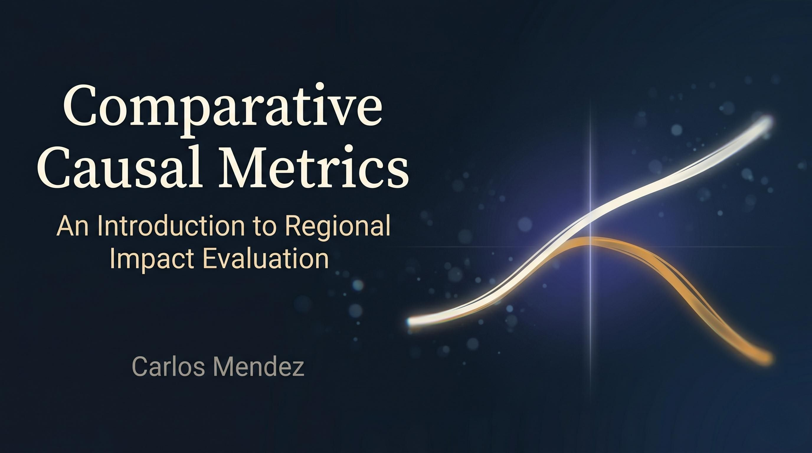

Comparative Causal Metrics
An Introduction to Regional Impact Evaluation
Welcome

About this book
Comparative Causal Metrics is an introduction to regional impact evaluation using modern causal-inference methods implemented entirely in R and rendered with Quarto. The book is organized in two parts, each anchored by a running case study and a different family of estimators.
Who this book is for
The book is written for advanced undergraduates, master’s students, and early-career researchers in econometrics, public policy, and spatial economics. Readers are assumed to know basic R (tidyverse-style data wrangling and fitting lm()) and one semester of econometrics (OLS, fixed effects, standard errors). No prior exposure to causal inference is assumed — chapter 1 introduces the potential-outcomes framework from scratch.
Part I — One region, one shock
Chapters 1–8 study the single-treated-unit setting. Most evaluate California’s 1989 Proposition 99 cigarette tax, the canonical example: each builds a counterfactual for California from a different data source — the state’s own past, a neighbour, a weighted blend of donor states, or a Bayesian time-series model — and reports the average treatment effect on the treated (ATT) between 1989 and 2000. Chapter 5 is the exception, stress-testing augmented synthetic control on a purpose-built simulated tobacco panel where the true effect is known. The ATT compares California’s observed cigarette sales after the policy against what they would have been without it; chapter 1 makes this missing-counterfactual logic precise.
- Introduction — the potential-outcomes vocabulary and a naive pre-post strawman estimate.
- Interrupted time series — extrapolating California’s pre-period trajectory forward.
- Basic difference-in-differences — subtracting a single control state’s pre-to-post change.
- Classical synthetic control — building a weighted donor blend that matches the pre-period.
- Augmented synthetic control — bias-correcting and multi-period synthetic control on a simulated, staggered, multi-treated tobacco panel via
augsynth. - Structural Bayesian time series — state-space counterfactuals with posterior credible intervals.
- Synthetic control with prediction intervals — frequentist forecast-error decomposition via the
scpipackage. - Bayesian spatial synthetic control — a horseshoe-prior donor blend with spatial spillovers onto neighbours.
Part II — Many regions, staggered adoption
Chapters 9–11 evaluate the Callaway-Sant’Anna minimum-wage county panel, where thousands of counties adopted different state minimum-wage levels at different years. The single-treated-unit toolkit no longer applies: the estimand becomes a family of cohort-specific ATTs indexed by adoption year, and the methods exploit the panel’s panel-data structure rather than a single time series.
- Staggered difference-in-differences — group-time ATT(g, t) estimators that avoid two-way fixed-effects bias.
- Interactive fixed effects and matrix completion — factor models that relax parallel trends.
- Generalized synthetic control — projecting treated units onto factors estimated from never-treated controls.
Each chapter pairs the conceptual logic of the method with a worked R example using publicly available data, so readers can reproduce every estimate end-to-end. A forthcoming cross-method comparison chapter will tabulate the ATT estimates from chapters 2–11 side by side on the two shared datasets; chapter 11 sketches what that comparison will look like.
How to read this book
The chapters are designed to be read sequentially but each is self-contained. Readers new to causal inference should start with chapter 1, which lays out the potential-outcomes vocabulary and a decision tree that maps each data situation to the appropriate method in this book. Code is folded by default — click </> Code in any chapter to reveal the underlying R. The full source is available on GitHub. The HTML site is the canonical version of the book; an on-demand PDF build may also be available from the navbar, but because PDFs are rebuilt only on request, the live PDF can lag a few commits behind the HTML.
For readers who want to render a single chapter without cloning the repo, every numbered chapter offers a self-contained .zip bundle (chapter source, dataset, and a minimal _quarto.yml) at the bottom of the same </> Code dropdown. Unzip and run quarto render <chapter>.qmd — no renv setup required.
Acknowledgments
This book builds on the infrastructure of the companion project Mastering Causal Metrics and on a long tradition of applied econometric scholarship. The Proposition 99 panel used through most of Part I was assembled by Abadie et al. (2010) (chapter 5 instead uses a small simulated tobacco panel of the author’s own construction to exercise the augmented-control estimators); the staggered-adoption minimum-wage panel in Part II is the county-level dataset packaged with the did R package by Callaway & Sant’Anna (2021). I am also grateful to the open-source maintainers of tidysynth, Synth, augsynth, CausalImpact, bsts, scpi, did, HonestDiD, fect, gsynth, fixest, fpp3 (and its fable/feasts siblings), panelView, and Rcpp — every chapter in this book is a thin wrapper around their work.
License
The text of this book is released under the Creative Commons Attribution 4.0 International (CC-BY 4.0) licence, and all accompanying R code is released under the MIT License. You are free to reuse, adapt, and redistribute the material with attribution.
How to cite
Mendez, C. (2026). Comparative Causal Metrics: An Introduction to Regional Impact Evaluation. https://quarcs-lab.github.io/ccm/